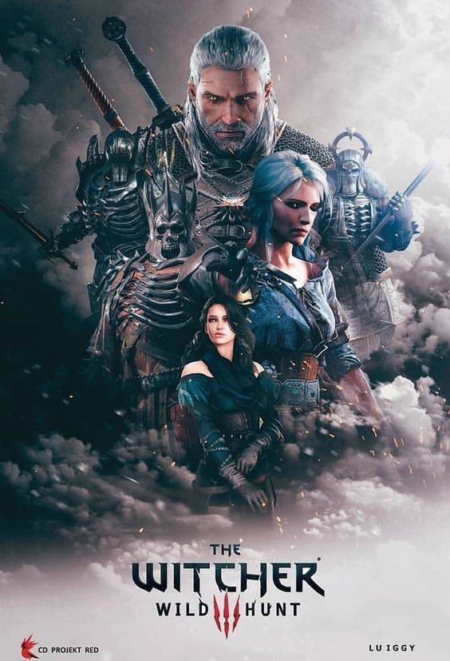

The Witcher

Summary
The Witcher is a fantasy drama series created by Lauren Schmidt Hissrich, based on the book series of the same name by Andrzej Sapkowski. It follows Geralt of Rivia, a monster hunter known as a Witcher, as he navigates a world filled with dangerous creatures and political intrigue.
Cast
- Henry Cavill as Geralt of Rivia
- Anya Chalotra as Yennefer of Vengerberg
- Freya Allan as Princess Ciri
- Jodhi May as Queen Calanthe
- Björn Hlynur Haraldsson as King Eist
Storyline
The series explores themes of destiny, family, and the consequences of choice as Geralt, Yennefer, and Ciri's paths intertwine amidst the backdrop of a world on the brink of war.
Episodes
- Season 1: 8 episodes
- Season 2: 8 episodes